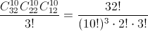

When playing a card game, three players are dealt 10 cards each, and two cards are placed to the side. How many different ways is it possible for the cards to be arranged in this game? $($Possible handouts are considered without taking into account the fact that every 10 cards are given to a specific player$)$.
See problem numbers 30692, 30702.
Nothing to translate.
 arrangements.